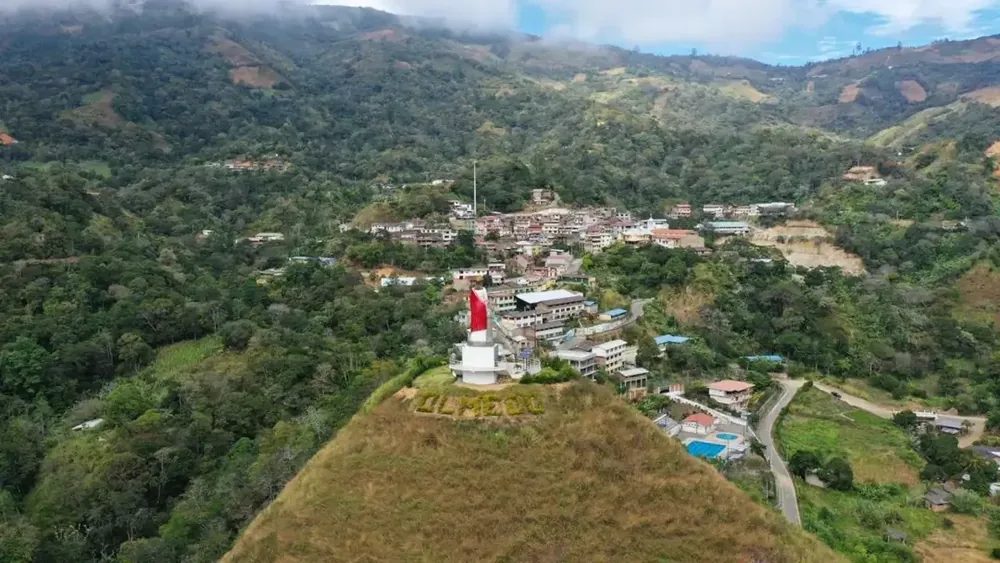

LOJANOVA 16/16 · Provincia de Loja
Olmedo
Un nuevo capítulo de Loja
Olmedo formaba parte de Paltas antes de convertirse en cantón en 1997. Su creación abrió un nuevo capítulo en la organización territorial de la provincia de Loja.
Reseña histórica · consultar fuente oficial ↗Descubre su oferta ↓
—Productos publicados
—Productores publicados
—Categorías con productos
Hecho en Olmedo
Descubre sus productos.
Consultando la oferta publicada…
Personas que dan vida al territorio